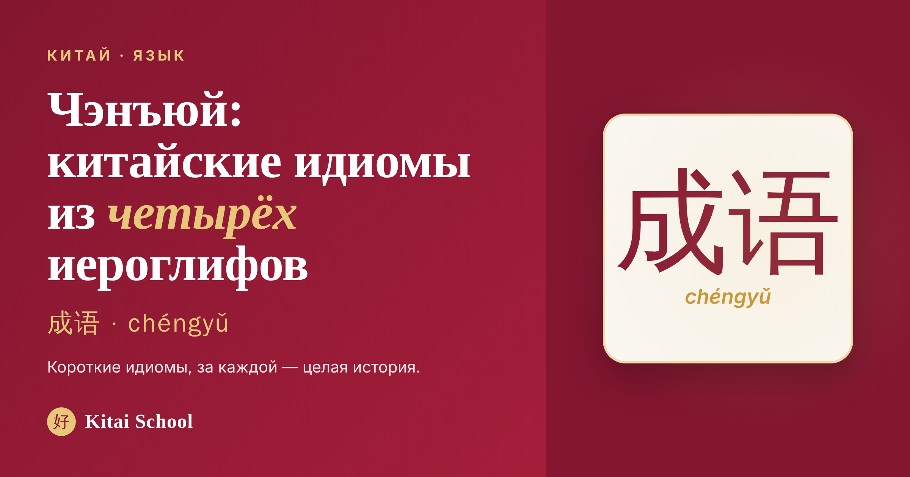
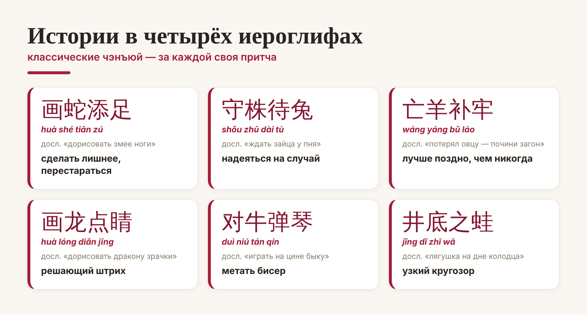
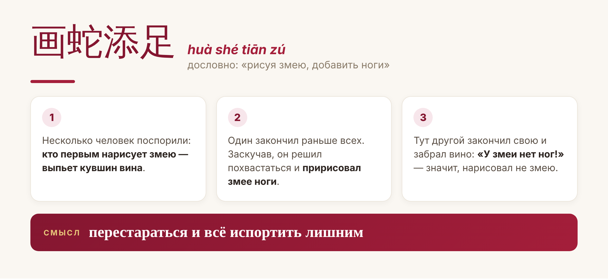
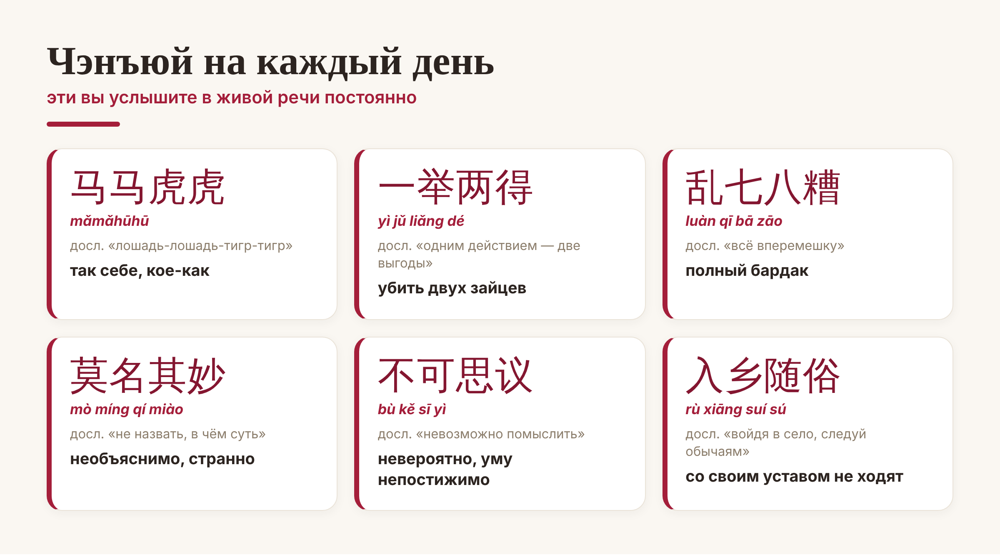

Китай · язык

Представьте слово, в которое упакована целая притча. В китайском таких тысячи — это чэнъюй (成语, chéngyǔ): короткие идиомы, почти всегда из четырёх иероглифов, за каждой из которых прячется история. Знать их — всё равно что знать культурный код: именно чэнъюй отличают беглую речь от «просто правильной».
Разберёмся, что за зверь эти китайские идиомы, какие истории спрятаны в четырёх иероглифах и как выучить первые чэнъюй без зубрёжки.
Чэнъюй (成语) дословно — «готовые слова». Это устойчивое выражение, которое почти всегда состоит из четырёх иероглифов. Главная хитрость: смысл чэнъюй обычно не складывается из значений отдельных слов — его нужно знать, как мы знаем, что «бить баклуши» не про баклуши.
Откуда их столько? Большинство чэнъюй восходят к классической литературе, историческим хроникам и притчам — текстам, которым по две тысячи лет. Поэтому за сухими четырьмя знаками часто стоит целый сюжет с моралью. Больши́е словари насчитывают десятки тысяч чэнъюй (в крупнейших — свыше 30 000), но пугаться не надо: в живой речи постоянно крутится всего несколько сотен.
Самое красивое в чэнъюй — что каждая идиома это свёрнутая история. Вот шесть классических, которые знает в Китае каждый школьник:

Возьмём самую известную — 画蛇添足 (huà shé tiān zú), дословно «дорисовать змее ноги». За ней стоит целая притча:

Вот почему китаец, услышав 画蛇添足, сразу понимает: кто-то перестарался и всё испортил лишним. Четыре иероглифа — а внутри и сюжет, и мораль. Так же устроены и остальные: 守株待兔 (shǒu zhū dài tù) «сторожить пень, ждать зайца» — про того, кто надеется на случайную удачу вместо труда; 亡羊补牢 (wáng yáng bǔ láo) «потерял овцу — почини загон» — ободряющее «лучше поздно, чем никогда».
Не все чэнъюй — про древние притчи. Многие вы услышите в обычном разговоре, в сериале и в переписке. Вот живой минимум:

Абсолютный чемпион по частоте — 马马虎虎 (mǎmǎhūhū), буквально «лошадь-лошадь-тигр-тигр». Означает «так себе, кое-как»: спросят, как дела, — можно ответить именно так. А 入乡随俗 (rù xiāng suí sú) «войдя в село, следуй обычаям» — ровно наше «в чужой монастырь со своим уставом не ходят».
Главный секрет: учите чэнъюй вместе с историей, а не как набор иероглифов. Сюжет — это крючок, за который память держит все четыре знака разом. Зазубрить 守株待兔 отдельно трудно, а историю про крестьянина и зайца у пня забыть невозможно — и идиома приходит сама.
Как действовать на старте. Берите по одной чэнъюй в неделю: прочитайте историю, произнесите вслух, придумайте, где её вставить. Пять-шесть выученных идиом — и ваша китайская речь сразу зазвучит живее и «по-местному».
Вот и весь секрет чэнъюй: это не страшная грамматика, а маленькие истории, свёрнутые в четыре иероглифа. Начните с одной полюбившейся — и очень скоро поймаете себя на том, что думаете китайскими идиомами.
Учите с удовольствием! 熟能生巧。